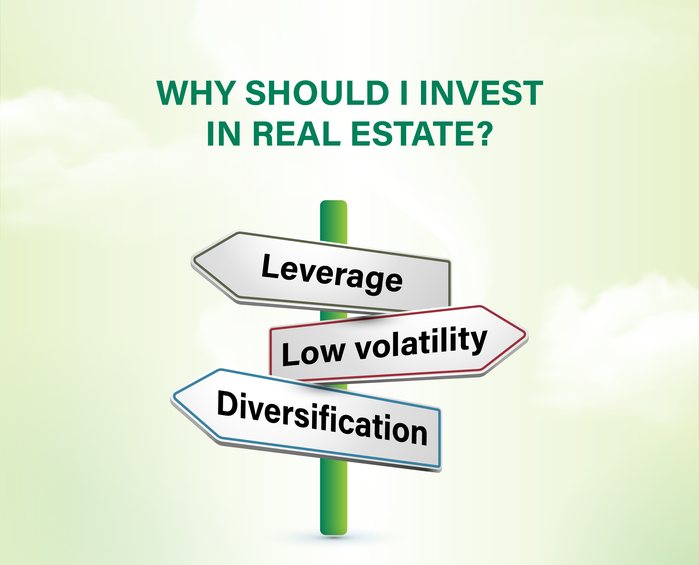

Why Should You Invest In Real Estate ?
There are many advantages when it comes to investing in real estate that need to be understood before you make your first purchase. The first and most obvious advantage is that with the growing population people need a place to live and that is becoming more scarce. Therefore over time real estate is going to appreciate in value, which means that it will provide you with long-term returns through price appreciation
Another advantage that comes with buying real estate is that you can use the power of leverage to buy it. Unlike stocks where you need to save all the money by yourself in order to invest. Real estate can be bought with a mortgage which allows investors to purchase properties by having a portion of the total price of the house.
After getting a mortgage and paying it off for a couple years you start to build equity which can be taken out using a home credit line so that you can invest in even more properties. Equity is the money that is tied to the house which belongs to you and not the bank. For example, let's say you bought a house that costs a million dollars, and you put 20% as a down payment which means that you got a mortgage for $800,000. After paying it off for a couple years let's say you bring the mortgage down to $600,000. Let's also assume that after a couple years the value of the house went up to $1.2 million. that means that you built an equity of $600,000 that you can refinance the house and take out to put towards your next investment. Now keep in mind it's not all yours, you do have to pay lawyers, agents, or photographers for selling the house. However the main advantage that you get here is that you're using someone else's money to buy the house and the value is appreciating over time so you're double dipping in profits essentially.
Requirements of Purchasing A Property ?
There Will be a few things that you will need to invest in a property, this can vary from different locations but generally you will need to have a higher income and a good credit score to qualify for a mortgage, however in our case since we're in our 20s you probably don't have a high income so you would need a co-signer. A co-signer is a person that would be able to pay the mortgage if they ever defaulted on loan. So that basically means it would have to be someone very close to you. However if you don't have any of that then you can try going to B lenders that might qualify you with a little higher interest rate on the loan. Here is a list of requirements that you need to buy a house:
- Down payment: minimum down payment is 5% for homes up to $500,000 then 10% for homes from $500,000 to $999,999. If the home is over a million it's 20%
- Mortgage pre-Approval: helps you determine how much you can afford to borrow.
- Real Estate Agent: Finds you a home and can negotiate better than you to lower the price
- Home Inspection: Recommended to insure that your house doesn't have any issues
.
.
How Do I Know Which Home Is A Good Investment ?
After you have gotten all of these on the list you can start looking at some houses. However be careful because some houses are a better investment than others. The biggest tip I can give you is try to buy in an area where you are already living since you would already have a much better idea of the real estate market than somewhere else. You need to keep up with the prices of houses being listed and sold to get an idea of how much you want to pay for a house when it comes to putting an official offer. You also need to learn about the rental prices in the area depending on the home size. After you gathered some information you want to do some calculations to see if you can get a positive cashflow from the home. You want to take the monthly rental that you think you can get from renting the property and minus it by the monthly cost of owning the property. If your cashflow is positive then you have a good property on your hands. If you can't get a positive cashflow then you can try getting an older house that might need some repairs for a bit cheaper and fix it up.